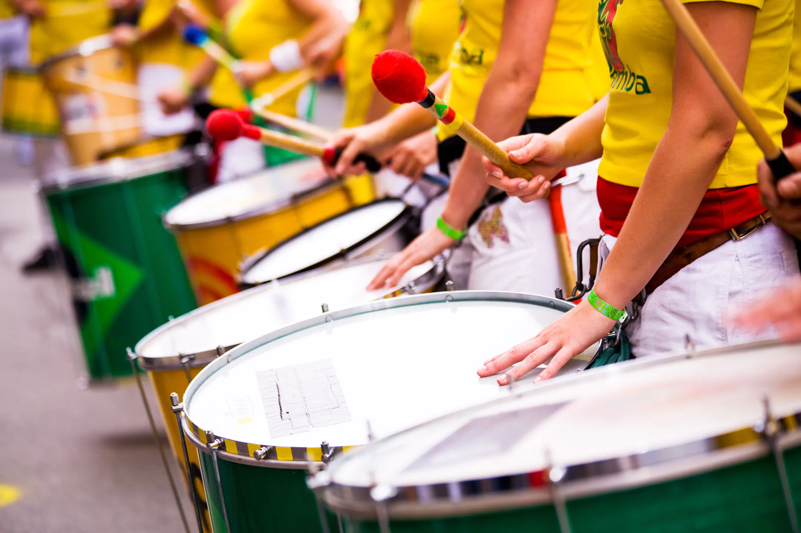
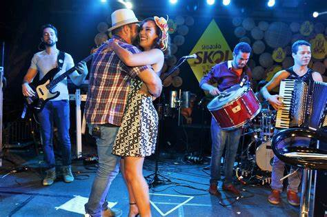

Samba
O samba é um dos gêneros musicais mais representativos do Brasil, com raízes africanas e uma forte ligação com o Carnaval.
O samba é um gênero musical e uma dança de origem afro-brasileira, considerado um dos elementos mais representativos da cultura popular do Brasil. Surgiu no início do século XX, principalmente nas comunidades afro-brasileiras do Rio de Janeiro, e é resultado da miscigenação entre a música africana e europeia. O samba é caracterizado por seus ritmos distintos e o uso de instrumentos de percussão, e é frequentemente associado a festividades e celebrações, como o Carnaval.
Bossa Nova
Nasceu na década de 1950 e mistura samba com jazz. Artistas como João Gilberto e Tom Jobim são ícones desse estilo.
A Bossa Nova foi um movimento da música popular brasileira que surgiu no final dos anos 50, caracterizado por forte influência do samba carioca e do jazz norte-americano. História da Bossa Nova A bossa nova desponta em meio ao processo de urbanização e industrialização no Brasil, no governo de Juscelino Kubitschek (1902-1976). Nessa época, estavam em vigor o Plano de Metas e a Política Desenvolvimentista, realçados pelo lema "cinquenta anos em cinco", que tinha como propósito o crescimento econômico do país. O movimento surge entre músicos jovens da classe média carioca, que se reuniam com o intuito de experimentar e inovar nas composições. Em 1958, o lançamento do compacto de João Gilberto, um dos maiores representantes da bossa nova, consolida o estilo musical. joão gilberto João Gilberto em apresentação junto com a filha Bebel Gilberto O movimento da Bossa Nova durou pouco mais de uma década, terminando em 1966. Posteriormente, aparece outro estilo, a MPB (Música Popular Brasileira), que valoriza e se referencia na bossa nova. Importante ressaltar que o término do movimento não significou o fim da criação musical seguindo essa linha, uma vez que muitos compositores e músicos atualmente buscam unir os tons melódicos e o samba brasileiro. Veja também: MPB - Música Popular Brasileira Origem do termo "Bossa nova" O termo "Bossa" foi utilizado pela primeira vez numa canção composta por Noel Rosa, Coisas Nossas, na década de 1930. Na letra, Noel diz: "O samba, a prontidão e outras bossas, são coisas nossas". A expressão era uma gíria utilizada para se referir a um "jeito de fazer as coisas". Dessa forma, os artistas se apropriaram do termo "bossa nova" para sugerir que estavam compondo e cantando de uma nova maneira. Características e músicas da Bossa Nova As características da Bossa Nova podem ser apontadas como: tom coloquial na voz; temas cotidianos; voz mais baixa, quase como sussurros; harmonias de samba; invenções melódicas de jazz. Uma das músicas mais marcantes desse movimento, e que ficou conhecida mundialmente, é Garota de Ipanema, composta por Vinícius de Moraes e Antônio Carlos Jobim em 1962. A história da canção é verídica, inspirada na modelo brasileira Helô Pinheiro, a moça bonita que passava na orla da praia de Ipanema no Rio de Janeiro. Além dessa, a música Chega de Saudade, também composta pela dupla Tom e Vinícius, marcou época. Vale lembrar que a canção que assinalou o fim do movimento da Bossa Nova no Brasil é Arrastão, de Vinícius de Moraes e Edu Lobo. Outras músicas que fizeram muito sucesso na época e são importantes obras brasileiras: Eu Sei Que Vou Te Amar, Se Todos Fossem Iguais a Você, Águas de março, Samba de uma nota só, O barquinho, Desafinado, Outra Vez, Coisa mais linda, Corcovado, Insensatez, Maria Ninguém, O Pato, Lobo Bobo, Saudade fez um Samba, dentre outras. Veja também: Samba de Roda Músicos importantes da Bossa Nova Além de João Gilberto, Tom Jobim e Vinícius de Moraes foram figuras essenciais para o desenvolvimento desse estilo musical. Outros músicos e compositores também aderiram ao estilo, alguns deles são: Dorival Caymmi Edu Lobo Francis Hime Marcus Valle Paulo Valle Carlos Lyra Ronaldo Bôscoli Nara Leão Bebel Gilberto Baden Powell Nelson Motta Wilson Simonal João Gilberto João Gilberto Prado Pereira de Oliveira, conhecido como João Gilberto, foi um dos maiores expoentes da Bossa Nova no Brasil, considerado pioneiro nessa vertente. O músico nasceu em Juazeiro, Bahia, no dia 10 de junho de 1931. Faleceu em 6 de julho de 2019, no Rio de Janeiro. Figura genial, João Gilberto foi compositor, cantor e violonista. Algumas de suas composições, são: Desafinado, Bim Bom, Acapulco, Hô-Bá-Lá-Lá, Um abraço no Bonfá, Japão (Je Vous Aime Beaucoup?), Glass Beads, Minha saudade, dentre outras. Selecionamos um vídeo que mostra o músico apresentando Desafinado, veja:

Forró
Originário do Nordeste, o forró é tocado com sanfona, zabumba e triângulo. É muito popular nas festas juninas.
O forró é uma expressão artística genuinamente nordestina. Por ser uma forma de manifestação cultural ampla, o termo forró tem diversos significados e pode servir tanto para designar o ritmo musical, o estilo de dança e mesmo a festividade em que acontece. Como surgiu o forró? Sua origem tem relação com bailes populares que eram realizados no final do século XIX e eram chamados de "forrobodó", "forrobodança" ou "forrobodão". Naquele tempo era preciso molhar o piso do local onde essas festas aconteciam, pois eles eram feitos de "chão batido", ou seja, não havia revestimento, somente terra. As pessoas costumavam dançar arrastando os pés a fim de evitar que a poeira levantasse, daí o termo rastapé ou arrasta-pé. forró xilogravura Xilogravura "Forró de Regina", Regina Drozina Também foram encontradas semelhanças entre esse estilo de dança e o toré - celebração indígena onde em dado momento ritualístico os indivíduos arrastam os pés nos chão.
A música brasileira é diversa, vibrante e cheia de história. Explore também o axé, o funk carioca, o sertanejo e muito mais!